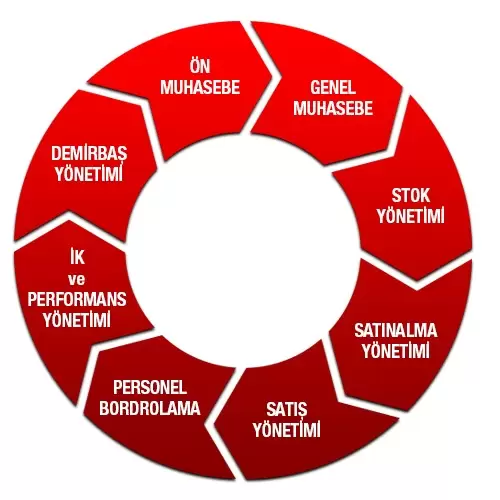
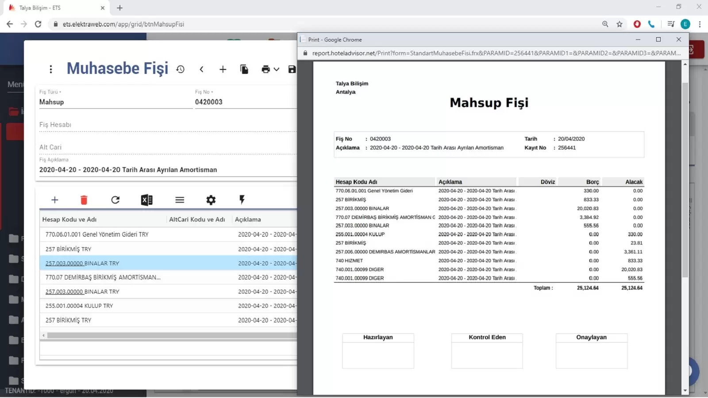
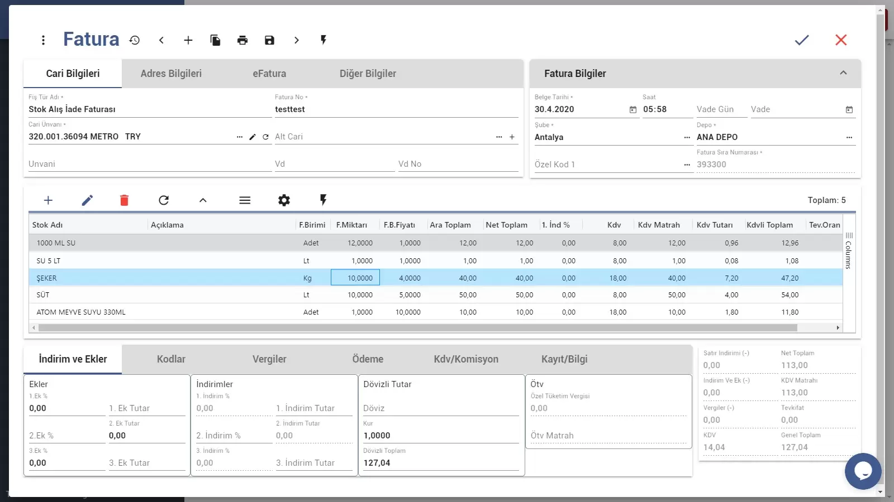
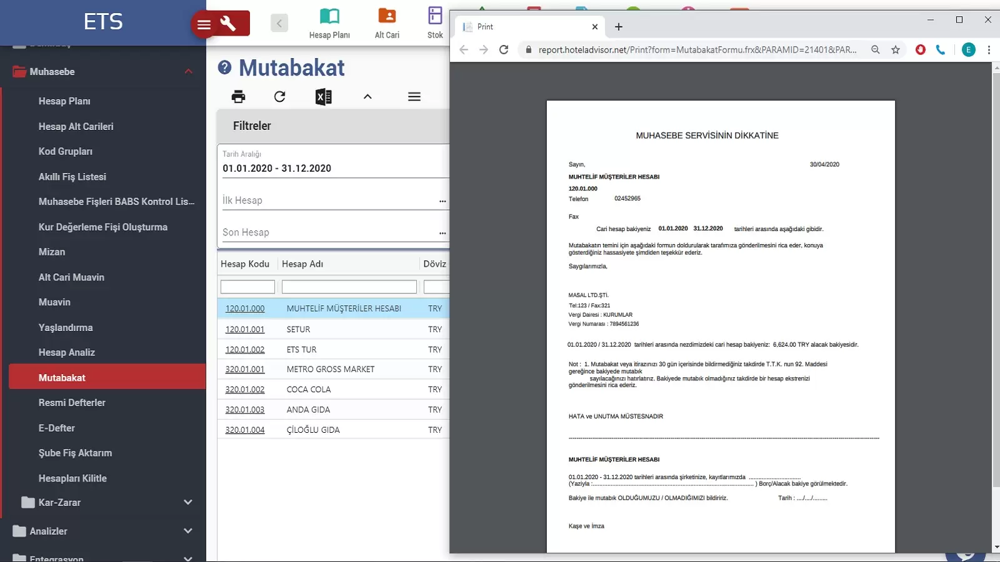

Elektraweb Otel Muhasebe Yönetimi
Otellerin ihtiyaçlarına göre özelleştirilmiş kapsamlı bir web tabanlı muhasebe yönetim sistemidir. Ön muhasebe ve genel muhasebe dışında işletmenin idari süreçlerinin tamamını yönetebilecek satınalma, demirbaş, personel, stok ve satış yönetimi modüllerine de sahiptir. Tamamen modüler olarak tasarlandığından ihtiyaç doğrultusunda istenilen modüller sonradan da eklenebilir

- Proje, masraf merkezi ve ürüne göre gelir ve gider takibi yapılabilir.
- Muhtemel ödeme ve tahsilat bilgilerine göre istenen tarih aralığındaki olası nakit akış planını hazırlar.
- Vadesi gelen ödeme ve tahsilatları otomatik olarak hatırlatır.
- Hesap Ekstrelerinde Borç Alacak VADELERİNİ ve BORÇ YÜZDESİNİ gösterir.
- Cari Hesaplarda Kredi Limiti Kontrol eder.
- Stok sayımına göre Açık Analizi ve Depo Maliyet analizini çıkarır.
- Tüm ekranlar kullanıcı bazında yetkilendirilmiştir. Ayrıca detaylı LOG sistemi sayesinde kimin, hangi bilgisayarda, hangi işlemi yaptığı izlenebilir
- İşlem ve özel kod gruplarına göre mizan çekilebildiği gibi, Hesap kodu, Şube kodu, Masraf merkezi ve Proje kodlarına göre kırılımlar oluşturularak mizan çekilebilir.
- Ekran tasarımları kullanıcıya özel saklanabilir. Bu tasarım tamamen göründüğü şekilde excele aktarılabilir. Tüm bilgiler excele aktarılabildiği gibi, exceldende aynı şekilde kopyalama işlemiyle programa aktarılabilir.
- Programdan detaylı yaşlandırma raporu ve mutabakat formları alınabilir

Esnek Yapı, Kolay Kullanım
Tüm listelerde istenilen alanlar görünür veya gizli yapılabilir. İstenilen alanlara göre gruplama yapılabilir. Fatura içinde çok detaylı bilgi saklanabilmesi sayesinde istenen tüm analizlere kolaylıkla ulaşılır.

- Dövizli işlem girişi yaparken TL veya döviz miktarı girilmesi yeterli olur, sistem kuru otomatik getirecektir. Müdahale etmek istenirse tabi ki bu kura müdahale edilebilir.
- Fiş yapısı son mevzuata, UFRS ve E-defter yapısına uygun şekilde belge no, tarih ve tür alanlarını destekler, bunları mümkün olduğunca otomatik doldurur ve zorunlu olduğu durumlarda uyarı verir. Kullanıcıyı yönlendirerek eksik ya da yanlış bilgi girişini engeller.
2-Muhasebe-Fisi-ciktısı.jpg
- Fiş girişi yaparken girilen bir işlemin masraf merkezi anahtarlarına göre satırlara otomatik dağıtımını yaptırabilir. Böylelikle örneğin bir gider satırını istediğiniz masraf merkezlerine otomatik dağıtma olanağı sağlar.
- Tüm silinmiş fişler veya fişlerin içerisindeki silinmiş satırlar ayrıca saklanır ancak yetki ile geri alınabilir. Bir başka deyişle, hiçbir veri fiziksel olarak silinemez.
- Detaylı yetkilendirme sayesinde tüm fişler «işlemde» «onaylandı» vb. şeklinde etiketlendirilebilir. Onaylanan fiş üzerinde yetkisiz kişiler tarafından işlem yapılamaz.
Hızlı ve Kolay Fatura Girişi
- Faturanın girişi sırasında, hem faturanın tümü için bir seferde, istenirse her satır için ayrı olacak şekilde satırlarda, masraf merkezi, proje kodu, 2 özel ve 2 grup kodlu olmak üzere toplam 8 farklı kategori tanımlanabilir. Faturanın muhasebeleşmesi ile tüm bu girilen bilgilerin olduğu gibi muhasebe fişine yansıması sağlanır.
- Tüm bilgilere ve hesapların muavinine kolaylıkla ulaşılabilir.
- Müstahsil makbuzu, gider pusulası veya serbest meslek makbuzu gibi içerisinde ek vergi ödemeleri olan faturalarda fatura giriş ekranından kolaylıkla bilgi girişi yapılabilir.
- Faturaya ait muhasebe fişi, faturayı kaydetmeden görülebilir. İstenirse fatura kayıt edilirken muhasebe fişi otomatik olarak oluşturulup yazdırılabilir.
- Stok fatura girişinde istenilen depo kodu seçilip tüm malzemelerin aynı depoya çıkışı sağlanabildiği gibi her satıra ayrı depo kodları girilerek istenilen malzemelerin farklı depoya gitmesi sağlanabilir.
Faturada İndirim, Vade, Ödeme Seçenekleri
- Fatura vadesi,seçilen cari hesaba tanımlanan opsiyona göre otomatik oluşur. İstenirse manuel olarak değiştirilebilir.
- Faturada satırda 2 indirim oranı, fatura altında ise hem oran hem de tutar olarak girilebilen 6 indirim alanı daha mevcuttur. Bu indirim oranlarına göre gerçek stok giriş maliyetleri hesaplanır.
- Malzeme girişleri irsaliye ile bedelsiz yapılabilir. Fatura gelişinde ise irsaliye faturaya dönüşürken maliyetler kesinleşebilir. Bu durumda malzemeler irsaliye ile girişi yapılır. Malzeme giriş tarihi olarak irsaliye tarihi maliyeti kullanılır.
- Faturaya ait ödeme, fatura üzerinde direkt olarak girilebilir. Hatta bu ödeme farklı hesaplara değişik tutarlarda yapılabilir.
Elektraweb Muhasebe Modülü e-Fatura Uyumludur
- E-fatura uyumludur. Fatura mükellefi olan firmaları otomatik olarak tanır ve normal fatura yazdırılmasına izin vermez. Online olarak e-fatura olarak göndererek e-fatura numarasını alır.
- E- fatura gönderimi portal üzerinden veya özel entegratör ile yapılabilir. (E-Fatura hakkında ayrıntılı bilgi için bkze-fatura,e-defter, e-arşiv modülü)
- E-arşiv faturasını özel entegratör vasıtası ile üretmek mümkündür. (E-Arşiv hakkında ayrıntılı bilgi için bkze-fatura,e-defter, e-arşiv modülü)
- BaBs raporu fatura ünvanı ve vergi dairesi alanına göre hazırlanır bu sayede cari kart açmadan alış ve satış faturaları girilebilir. Örneğin, Otelde peşin kesilmiş firmalara cari kart açılması gerekmez
ETSweb Muhasebe Modülü Elektra Ön büro Modülü ile entegredir